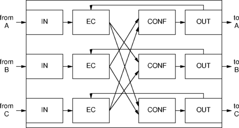

The high level conferencing API described in the Prosody Speech
Processing API guide allows simple conferencing between multiple parties
to be set up/torn down, and does not contain additional features. The
high level conferencing library highapi/smclib.c that implements
this API is provided as an open source library built over low level
conferencing primitives which can be modified by application developers
to include their own application specific conferencing features.
This application note describes how the low level conferencing primitives are used in the high level conferencing library implementation, and gives some guidance on how the library can be modified to introduce new conferencing features. It can also be read as an illustration of how to use the low level conferencing primitives for developers writing their own conferencing code but not using the high level library.
Note: Readers of this document should be familiar with the Prosody Speech Processing API.
A simple conference between N parties is constructed of
N conferencing jobs, each conferencing job being a transmit
job, running on the output side of a participant associated channel,
that outputs the sum of the signals of the job's specified set of inputs.
For instance, if there are three parties in a simple conference,
A, B, and C, each with a full
duplex channel allocated, then the three party simple conference would be
constructed by the high level conferencing library as the following three
conferencing jobs:
A.out = B.in + C.in B.out = A.in + C.in C.out = A.in + B.in
It is very important to understand that it is not possible to construct such a conference merely by summing the all input signals of all the participants, and switching this summed signal to all the participant outputs:
A.out = A.in + B.in + C.in ## A will get bad echo of A B.out = A.in + B.in + C.in ## B will get bad echo of B C.out = A.in + B.in + C.in ## C will get bad echo of C
On first inspection, it might be thought that the amount of processing the DSP has to do for three conferencing jobs is three times the amount of work it would have to do a single job combining all participant inputs, thus limiting the scalability of conferencing on a Prosody module. In fact, the conferencing jobs are not run independently of each other, instead, common processing occurs in generating the output signals for the set of conferencing jobs running on the Prosody module.
A conference job is normally constructed by invoking the low level conferencing primitive sm_conf_prim_start() on the required output channel, followed by invocations of sm_conf_prim_add() for each input signal to be summed.
If an N party simple conference is already constructed from
N participants and N conference jobs, it can be grown into
an N+1 party conference through the following steps:
N times in order to specify set of N inputs to
be summed by this job (do not add new participant's own input)
The first step may be more efficiently executed using
sm_conf_prim_clone().
This copies a conferencing job already running on another channel, say
X, which is already outputting the sum of
(N-1) participants. So following invocation of the new
conference job using
sm_conf_prim_clone(),
it is only necessary to add one participant's input signal to the new
conference job, that of X.
If an N party simple conference is already constructed from
N participants and N conference jobs, it can
be shrunk into an N-1 party conference through the
following steps (let participant Z be the leaving party):
Z's input signal from summed output switched to
each remaining participant
The TiNG firmware modules conf, inchan and outchan need to be loaded for conferencing to work. inchan and outchan outchan are the standard input and output channel modules that would normally be loaded, and conf is the conferencing module. Modules echocan and passthru need to be loaded if echo cancellation is required. No extra modules are required for side-tone suppression.
When an echo cancelled conference is constructed, each conference job needs to use the echo cancelled version of its participant's input. The echo canceller that creates this signal needs as its reference signal the conference output signal being sent back to the participant output. The diagram below shows the signal paths used for a simple three party conference with echo cancellation:

When used in this configuration, the reference for the echo cancellation job is not a separate input channel but is the output signal being generated by the conferencing job running on the participant output channel. If a full duplex channel is used, the echo cancellation job (an input job) and the conference job (an output job) may be part of the same channel. Alternatively, if you prefer, you can use two separate input-only and output-only channels.
A common requirement in conferencing applications, is the ability to record the conversation between all participants in the conference.
In order to achieve this, an additional channel is required for the conference. This channel is used:
alt_data_source)
Because the channel is required to run receive and transmit jobs simultaneously, it must be a full duplex channel. Normally neither the output nor the input of this additional channel would be switched (but see Adding a conference monitor feature below).
The conferencing library may be modified so that:
Sometimes it is necessary to play a prompt to either a specific conference participant, or to all participants in the conference.
In order to play a prompt to a specific participant, it is best to use the high level library to withdraw them from the conference, then invoke a replay job on their output channel, then re-instate them back into the conference.
In order to play a prompt to all conference participants, a special full duplex prompt channel can be allocated, and then the output of this channel switched to its input, and then the prompt channel input added to each participants conference job set of inputs when they enter the conference. Thus whenever a replay job is invoked on the prompt channel, all conference participants will hear the prompt.
This can be achieved using the same method as for recording the conversation taking place in a conference, the total summation job output is switched to the monitor bearer channel (recording job not necessary).
A coach is a special conference participant who can speak to an individual conference participant without been heard by other conference participants. The coached party will still be able to hear and participate in the conference with the other uncoached parties of the conference.
Assuming that a conference has at most one coach, and one coached party, coaching can be implemented by adding the coach input channel (signal from coach) to the input channel set for the coached party's conference job. Care must be taken that the coached party conference job is not used for cloning, otherwise new participants would get the coach input.
Typically, the signal sent to the coach would be sum of all other conference signals, this being so, the total summation job output (as used for monitor) may be switched to coach bearer channel.
Document reference: AN 1368